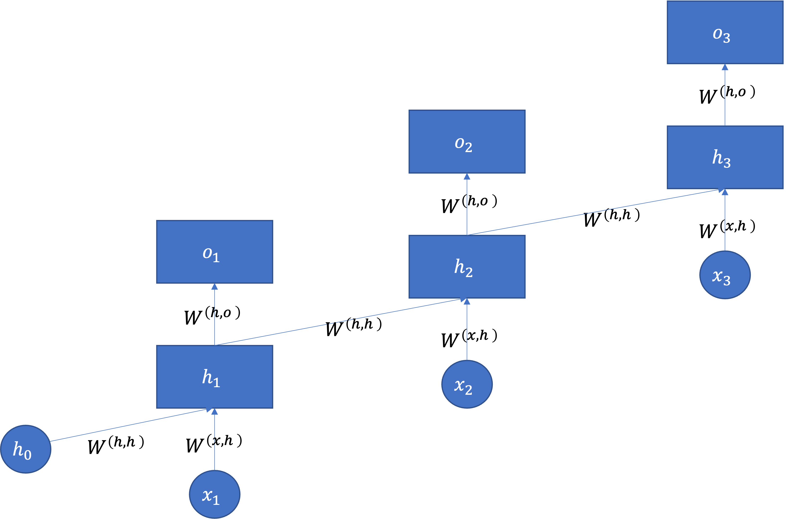

14. Recurrent Neural Network#
RNN（Recurrent Neural Network, 再帰型ニューラルネットワーク）

RNNのイメージ 出典：３層パーセプトロン – ニューラルネットワーク・DeepLearningなどの画像素材 プレゼン・ゼミなどに【WTFPL】
Show code cell source
# packageのimport
from typing import Any, Union, Callable, Type, TypeVar
from tqdm.std import trange,tqdm
import numpy as np
import numpy.typing as npt
import pandas as pd
import matplotlib.pyplot as plt
import plotly.express as px
import seaborn as sns
plt.style.use("bmh")
# pytorch関連のimport
import torch
import torch.nn as nn
import torch.nn.functional as F
import torch.optim as optim
from torch.utils.data import Dataset, DataLoader
14.1. RNNとは#
14.1.1. RNNのイメージと再帰構造#
RNNとは，時系列構造をもつデータをニューラルネットワークでうまく扱うことができる枠組みです．RNNというとネットワークの中に閉路があるだけでそれだと認識されるので，順伝搬において信号の伝搬路の中にループがあれば全てRNNと言われます．ここでは以下のようなネットワーク（エルマン型）を紹介します．
RNNのイメージ
出典：Long Short-Term Memory
※\(x\)の添字が0からスタートするか1からスタートするのかについてはあまり頓着せずに，左の図を展開すると右になることに納得してほしいです．
時系列データ\(\mathbf{x}=( x_1,x_2, \cdots,x_t, \cdots, x_{T} ) \in \mathbb{R}^T\)が与えられた時，\(x_t\)までの情報を使って\(x_{t+1}\)を予測したい場合や，\(\mathbf{x}\)に対応した別の時系列データ\(\mathbf{y}\)を予測したい場合などが考えられます．
「\(x_{t-1}\)までの情報を使って\(o_{t}\)を予測したい場合」，これまでの情報\(x_1 \cdots x_t\)を通常のMLPでうまく扱うことは難しいです．そこで，RNNでは\(t-1\)時点のMLPの中間層の出力を\(t\)時点のMLPの入力に利用します．RNNでは単位時間ごとのMLPは全てパラメータを共有しており，これまでと異なるのは\(h_t\)時点の隠れ層出力が\((x_{t}\cdot {W^{(x,h)}}^{\top} + h_{t-1}\cdot W^{(h,h)}+b)\)として次の隠れ層の入力となることだけです．

つまり\(h_t\)は活性化関数がtanhの時，以下のようにして求められます：
ただし，\(h_0\)にはゼロ行列を使います．
また，ここで使われているtanhをはじめとした双曲線関数 \(\sinh\) （ハイパボリックサイン）, \(\cosh\)（ハイパボリックコサイン）,\(\tanh\)（ハイパボリックタンジェント） は以下の式で定義されます：
特にtanhに着目すると，これはsigmoid関数に非常によく似た形になっている（取り得る範囲が0~1と-1~1の違い）ことがわかります．そのため，ニューラルネットワークの実装ではsigmoidの代わりにtanhを利用することもよくあります．
Show code cell source
plt.figure(figsize=(10, 4))
plt.subplot(1,2,1)
x = np.linspace(-2,2,100)
plt.plot(x,np.sinh(x), label="sinh")
plt.plot(x,np.cosh(x), label="cosh")
plt.plot(x,np.tanh(x), label="tanh")
plt.legend()
plt.title("hyperbolic functions")
plt.subplot(1,2,2)
x = np.linspace(-10,10,100)
plt.plot(x,np.tanh(x), label="tanh")
plt.plot(x, (lambda x: 1/(1+np.exp(-x)))(x), label="sigmoid")
plt.legend()
plt.title("Hyperbolic tangent & Logistic sigmoid")
plt.show()
14.1.2. フォワードプロパゲーションの流れ#
上述した通り，ここで紹介するRNNでは時間方向の影響をモデル化した隠れ層を利用しています．これを使ったRNNフォワードプロパゲーションの全体像を見ておきましょう．\(f\)と\(g\)は任意の活性化関数です．
Hint
例えば文書生成などがRNNを使う例として考えられます．入力データとして，ある文書に登場する単語一つ一つを\(x_1,x_2,\cdots,x_{T-1}\)として入力して，それぞれの出力を\(\hat{x_2},\hat{x_3},\cdots, \hat{x_T}\)としましょう．この時出力値はそれぞれ「入力された単語の次に出現する単語」に相当します．
（以下は疑似コードの形の方が理解しやすい人向け）
RNNの疑似コード Algorithm 14.1を作るために，以下の様に定義します．
\(M\): バッチサイズ
\(T\): 時間
\(K\): 特徴数
\(C\): クラス数
\(H\): 隠れ層の次元数
また，\(\operatorname{softmax}\)は最もネストの深い軸（axis=-1）を基準に計算しているとします．
Algorithm 14.1 (Forward propagation of RNN)
Input: \(\mathbf{X} \in \mathbb{R}^{M \times T \times K}\): mini-batch データ, \(\Theta\): モデルパラメータの集合
ここで, \(\Theta\)には以下のパラメータが含まれている．
\(\mathbf{W}^{(x,h)} \in \mathbb{R}^{K \times H}\): 入力層→隠れ層の重み
\(\mathbf{W}^{(h,h)} \in \mathbb{R}^{H \times H}\): 隠れ層→隠れ層の重み
\(\mathbf{W}^{(h,o)} \in \mathbb{R}^{H \times C}\): 隠れ層→出力層の重み
\(\mathbf{b}^{(x,h)} \in \mathbb{R}^{H}\): 入力層→隠れ層のバイアス
\(\mathbf{b}^{(h,o)} \in \mathbb{R}^{C}\): 隠れ層→出力層のバイアス
Output: \(\hat{\mathbf{Y}} \in \mathbb{R}_{>0}^{M \times T \times C}\): 各クラスへの所属確率
全ての要素を0で初期化 \(\mathbf{H} \leftarrow \mathbf{O} \in \mathbb{R}^{M \times T \times H}\)
\(\hat{\mathbf{H}}_{0} \leftarrow \mathbf{O} \in \mathbb{R}^{M \times H}\)
For \(t = 1:T\) do:
\(t\)時点の隠れ層出力を算出 \(\hat{\mathbf{H}}_{t} \leftarrow \operatorname{tanh}(\mathbf{X}_{:,t,:} \cdot \mathbf{W}^{(x,h)}+\mathbf{h}_{t-1}\cdot \mathbf{W}^{(h,h)} + \mathbf{b}^{(x,h)})\)
全ての時点の出力を一つの配列に保存 \(\mathbf{H}_{:,t,:} \leftarrow \hat{\mathbf{H}}_{t}\)
出力を算出 \(\hat{\mathbf{Y}} \leftarrow \operatorname{softmax}(\mathbf{H} \cdot \mathbf{W}^{(h,o)} + \mathbf{b}^{(h,o)})\)
14.2. BPTT（Backpropagation through time）#
学習ではunfold（展開）したネットワークに対して，一番最後の出力から遡ってBack Propagationしていきます．この手法のことを Back Propagation Through Time（BPTT） と呼びます．
パラメータの更新は以下のように行います：
損失関数は全ての出力値から計算したものを合計して利用します．それ以外は普通のMLPと同様です．
BPTTの利点
これまでのMLPの訓練方法の通りである
BPTTの欠点
計算グラフが大きくなるので勾配消失問題や勾配爆発問題が起こりやすい
この問題を解決するために，ある程度遡ったら途中で勾配を切り捨てる様なBPTTの拡張として，Truncated BPTT が提案されています．

遡るタイムステップ数 \(\tau\) を限定したBPTTを Truncated BPTT といいます。
Truncated BPTTの利点
勾配消失や勾配爆発をある程度抑制できる．
Truncated BPTTの欠点
任意の範囲で勾配履歴を切り落としてしまう．
14.3. 例：文書生成モデル#
14.3.1. データローダー#
with open("./data/ja.text8") as f:
text8 = f.read()
import re
def build_simply_dictionary(texts):
token_set = set(token for text in texts for token in text.split())
word2id = {token:id for id, token in enumerate(token_set)}
return word2id
def my_analyzer(text):
#text = code_regex.sub('', text)
tokens = text.split()
tokens = filter(lambda token: re.search(r'[ぁ-ん]+|[ァ-ヴー]+|[一-龠]+', token), tokens)
return tokens
def build_dictionary(texts, min_df=1):
from sklearn.feature_extraction.text import CountVectorizer
countvectorizer = CountVectorizer(min_df=min_df, analyzer=my_analyzer)
X = countvectorizer.fit_transform(texts)
id2word = {id:w for id,w in enumerate(countvectorizer.get_feature_names_out())}
word2id = {w:id for id,w in id2word.items()}
return id2word, word2id, X
texts = text8.split("。")
id2word, word2id,X = build_dictionary(texts,5)
V = len(id2word)
D = len(texts)
print(f"文書数: {D}, 語彙数: {V}")
WINDOW_SIZE = 11
preprocessed_texts = [[word2id[w] for w in text.split() if w in word2id] for text in texts]
preprocessed_texts = [text for text in preprocessed_texts if len(text) > WINDOW_SIZE]
文書数: 564194, 語彙数: 63269
def make_word2id_seq(corpus ,word2id, max_length=10):
tmp = []
for doc in corpus:
line = [word2id[w] for w in doc.split() if w in word2id]
# もしmax_lengthよりも単語数が多ければ切り捨て，
if len(line) >= max_length:
line = line[:max_length]
# もしmax_lengthよりも単語数が少なければ0で穴埋め,
elif len(line) <= max_length:
line += [0]* (max_length - len(line))
tmp.append(line)
return tmp
def make_id2word_seq(id_seqs, id2word):
tmp = []
for id_seq in id_seqs:
line = [id2word[id] for id in id_seq if id in id2word]
tmp.append(" ".join(line))
return tmp
class MyDataset(Dataset):
def __init__(self, id_data):
super().__init__()
self.data_length = len(id_data)
# 訓練データ。例：［'僕', 'は', 'カレー', 'が', '好き']
self.x = [row[0:-1] for row in id_data]
# 正解ラベル。例：['は', 'カレー', 'が', '好き', '。']
self.y = [row[1:] for row in id_data]
def __len__(self):
return self.data_length
def __getitem__(self, idx):
return torch.tensor(self.x[idx]), torch.tensor(self.y[idx])
BS = 2
dataset = MyDataset(make_word2id_seq(texts, word2id))
dl = DataLoader(dataset, batch_size=BS, shuffle=True, drop_last=True)
14.3.2. 文書生成RNNの作成#
class RNN(nn.Module):
def __init__(self, vocab_size, embedding_dim, hidden_size, batch_size, num_layers=1) -> None:
super().__init__()
self.hidden_size = hidden_size
self.batch_size = batch_size
self.num_layers = num_layers
self.device = torch.device("cuda:0" if torch.cuda.is_available() else "cpu")
self.embedding = nn.Embedding(vocab_size, embedding_dim, padding_idx=0)
self.rnn = nn.RNN(embedding_dim, hidden_size, batch_first=True, num_layers=self.num_layers)
self.fc = nn.Linear(hidden_size, vocab_size)
def init_hidden(self, batch_size=None):
if not batch_size:
batch_size = self.batch_size
self.hidden_state = torch.zeros(self.num_layers, batch_size,
self.hidden_size).to(self.device)
def forward(self, x):
x = self.embedding(x)
x, self.hidden_state = self.rnn(x, self.hidden_state)
x = self.fc(x)
return x
14.3.3. 訓練スクリプト#
EMBEDDING_DIM = 300
HIDDEN_SIZE = 300
NUM_LAYERS = 1
VOCAB_SIZE = len(word2id)# + 1
def train(model, dataloader, criterion, optimizer, epochs, vocab_size):
device = model.device
model.train()
losses = []
for epoch in range(EPOCHS):
running_loss = 0
for cnt, batch in enumerate(dataloader):
(X_train, y_train) = batch
optimizer.zero_grad()
X_train, y_train = X_train.to(device), y_train.to(device)
model.init_hidden()
outputs = model(X_train)
outputs = outputs.reshape(-1, vocab_size)
y_train = y_train.reshape(-1)
loss = criterion(outputs, y_train)
running_loss += loss.item()
loss.backward()
optimizer.step()
losses.append(running_loss / cnt)
print('+', end='')
if epoch % 50 == 0:
print(f'\nepoch: {epoch:3}, loss: {loss:.3f}')
print(f'\nepoch: {epoch:3}, loss: {loss:.3f}')
return losses
# 実行は以下のコードを叩くことで可能です．
EPOCHS = 1
model = RNN(VOCAB_SIZE, EMBEDDING_DIM, HIDDEN_SIZE, BS, NUM_LAYERS)
BS = 2
dataset = MyDataset(make_word2id_seq(texts, word2id))
dataloader = DataLoader(dataset, batch_size=BS, shuffle=True, drop_last=True)
criterion = nn.CrossEntropyLoss()
optimizer = optim.Adam(model.parameters(), lr=0.01)
losses = train(model, dataloader, criterion, optimizer, EPOCHS, VOCAB_SIZE)
Show code cell output
---------------------------------------------------------------------------
KeyboardInterrupt Traceback (most recent call last)
Cell In[8], line 44
41 criterion = nn.CrossEntropyLoss()
42 optimizer = optim.Adam(model.parameters(), lr=0.01)
---> 44 losses = train(model, dataloader, criterion, optimizer, EPOCHS, VOCAB_SIZE)
Cell In[8], line 24, in train(model, dataloader, criterion, optimizer, epochs, vocab_size)
22 running_loss += loss.item()
23 loss.backward()
---> 24 optimizer.step()
25 losses.append(running_loss / cnt)
27 print('+', end='')
File ~/.pyenv/versions/miniforge3-4.10.3-10/envs/datasci/lib/python3.10/site-packages/torch/optim/optimizer.py:280, in Optimizer.profile_hook_step.<locals>.wrapper(*args, **kwargs)
276 else:
277 raise RuntimeError(f"{func} must return None or a tuple of (new_args, new_kwargs),"
278 f"but got {result}.")
--> 280 out = func(*args, **kwargs)
281 self._optimizer_step_code()
283 # call optimizer step post hooks
File ~/.pyenv/versions/miniforge3-4.10.3-10/envs/datasci/lib/python3.10/site-packages/torch/optim/optimizer.py:33, in _use_grad_for_differentiable.<locals>._use_grad(self, *args, **kwargs)
31 try:
32 torch.set_grad_enabled(self.defaults['differentiable'])
---> 33 ret = func(self, *args, **kwargs)
34 finally:
35 torch.set_grad_enabled(prev_grad)
File ~/.pyenv/versions/miniforge3-4.10.3-10/envs/datasci/lib/python3.10/site-packages/torch/optim/adam.py:141, in Adam.step(self, closure)
130 beta1, beta2 = group['betas']
132 self._init_group(
133 group,
134 params_with_grad,
(...)
138 max_exp_avg_sqs,
139 state_steps)
--> 141 adam(
142 params_with_grad,
143 grads,
144 exp_avgs,
145 exp_avg_sqs,
146 max_exp_avg_sqs,
147 state_steps,
148 amsgrad=group['amsgrad'],
149 beta1=beta1,
150 beta2=beta2,
151 lr=group['lr'],
152 weight_decay=group['weight_decay'],
153 eps=group['eps'],
154 maximize=group['maximize'],
155 foreach=group['foreach'],
156 capturable=group['capturable'],
157 differentiable=group['differentiable'],
158 fused=group['fused'],
159 grad_scale=getattr(self, "grad_scale", None),
160 found_inf=getattr(self, "found_inf", None),
161 )
163 return loss
File ~/.pyenv/versions/miniforge3-4.10.3-10/envs/datasci/lib/python3.10/site-packages/torch/optim/adam.py:281, in adam(params, grads, exp_avgs, exp_avg_sqs, max_exp_avg_sqs, state_steps, foreach, capturable, differentiable, fused, grad_scale, found_inf, amsgrad, beta1, beta2, lr, weight_decay, eps, maximize)
278 else:
279 func = _single_tensor_adam
--> 281 func(params,
282 grads,
283 exp_avgs,
284 exp_avg_sqs,
285 max_exp_avg_sqs,
286 state_steps,
287 amsgrad=amsgrad,
288 beta1=beta1,
289 beta2=beta2,
290 lr=lr,
291 weight_decay=weight_decay,
292 eps=eps,
293 maximize=maximize,
294 capturable=capturable,
295 differentiable=differentiable,
296 grad_scale=grad_scale,
297 found_inf=found_inf)
File ~/.pyenv/versions/miniforge3-4.10.3-10/envs/datasci/lib/python3.10/site-packages/torch/optim/adam.py:344, in _single_tensor_adam(params, grads, exp_avgs, exp_avg_sqs, max_exp_avg_sqs, state_steps, grad_scale, found_inf, amsgrad, beta1, beta2, lr, weight_decay, eps, maximize, capturable, differentiable)
341 param = torch.view_as_real(param)
343 # Decay the first and second moment running average coefficient
--> 344 exp_avg.mul_(beta1).add_(grad, alpha=1 - beta1)
345 exp_avg_sq.mul_(beta2).addcmul_(grad, grad.conj(), value=1 - beta2)
347 if capturable or differentiable:
KeyboardInterrupt:
言語モデルの学習には非常に時間がかかります．寝る前に回してみましょう．